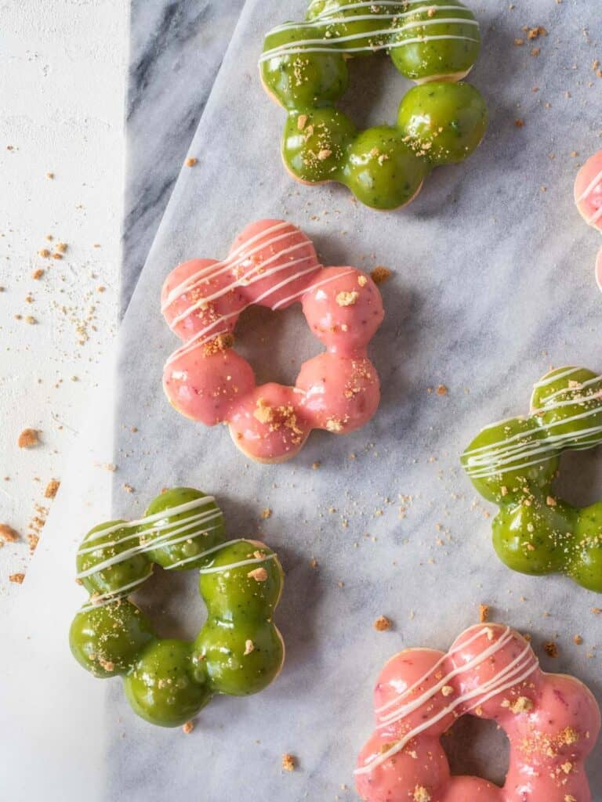

Mochi Donuts

Recipe & picture by the amazing Catherine Zhang
Inspired by the famous pon de ring from Mister Donut in Japan, these are the easier, healthier and equally as delicious version.
These baked strawberry and matcha white chocolate glazed mochi donuts are chewy, sweet and so good!
Ingredients
Mochi Donuts
- 30 g Sugar
- 100 g Milk
- 25 g Vegetable oil
- 20 g Plain flour
- 90 g Tapioca starch
- 1 Egg
Strawberry Glaze
- 100 g White chocolate
- 50 g Fresh Strawberries
Matcha Glaze
- 100 g White chocolate
- 2 g Matcha powder
- 40 g Thickened cream
Steps
Mochi Donuts
- Preheat oven to 170°C
- In a medium sized saucepan heat the milk, sugar and oil until steaming
- Add the flour and mix until smooth
- Remove from heat and add the tapioca starch, mix until completely combined and a smooth ball
- Transfer the dough to another bowl and slowly add the beaten egg, stopping when the batter hangs down from the spatula in a V-shape
- Transfer batter to a piping bag fitted with a round nozzle and pipe onto baking paper or a silicone mat according to the stencil (make sure that the piped circles touch each other very slightly)
- Bake for 12 - 15 minutes or until lightly golden brown
Strawberry Glaze
- Melt the chocolate in the microwave or over a bain-marie
- Add the strawberries and blend with a blender until smooth
- Transfer to a smaller bowl and dip the donuts into the glaze
- Lift up and tap slightly on a flat surface to spread the glaze evenly
- Set aside to allow glaze to set
Matcha Glaze
- Melt the chocolate in the microwave or over a bain-marie
- Add the matcha powder and mix until well combined
- Transfer to a smaller bowl and dip the donuts into the glaze
- Lift up and tap slightly on a flat surface to spread the glaze evenly
- Set aside to allow glaze to set